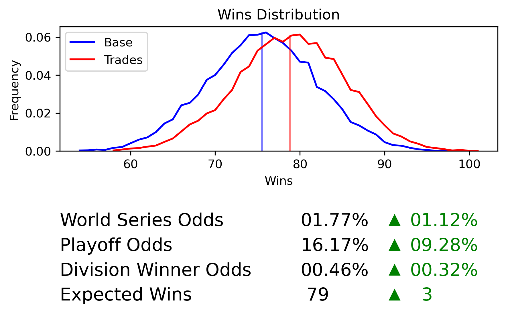
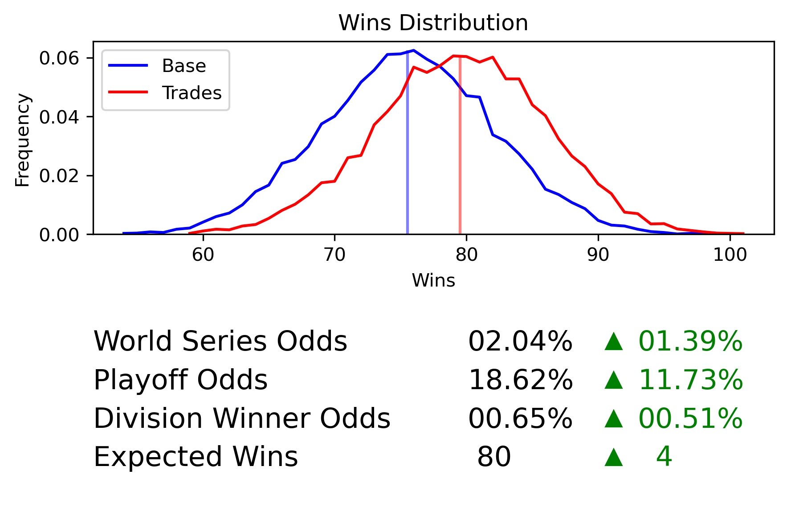
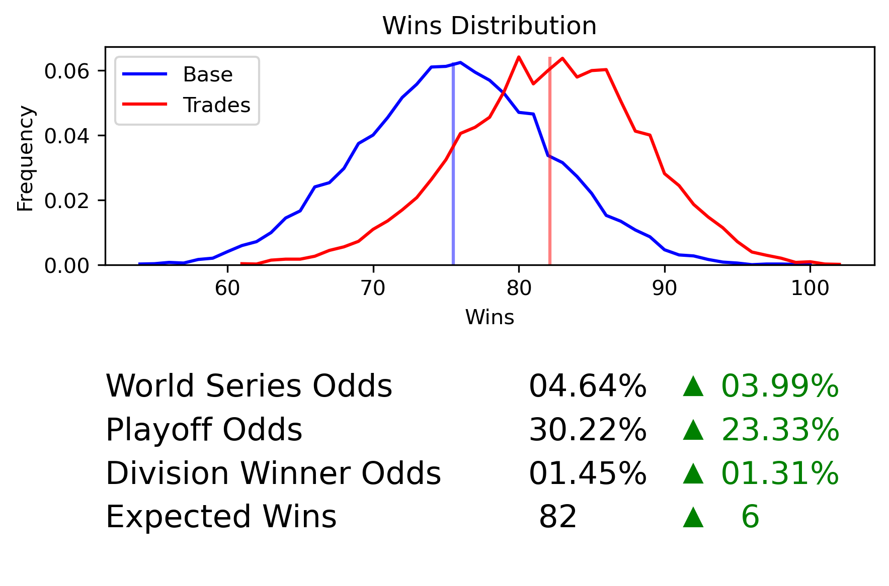
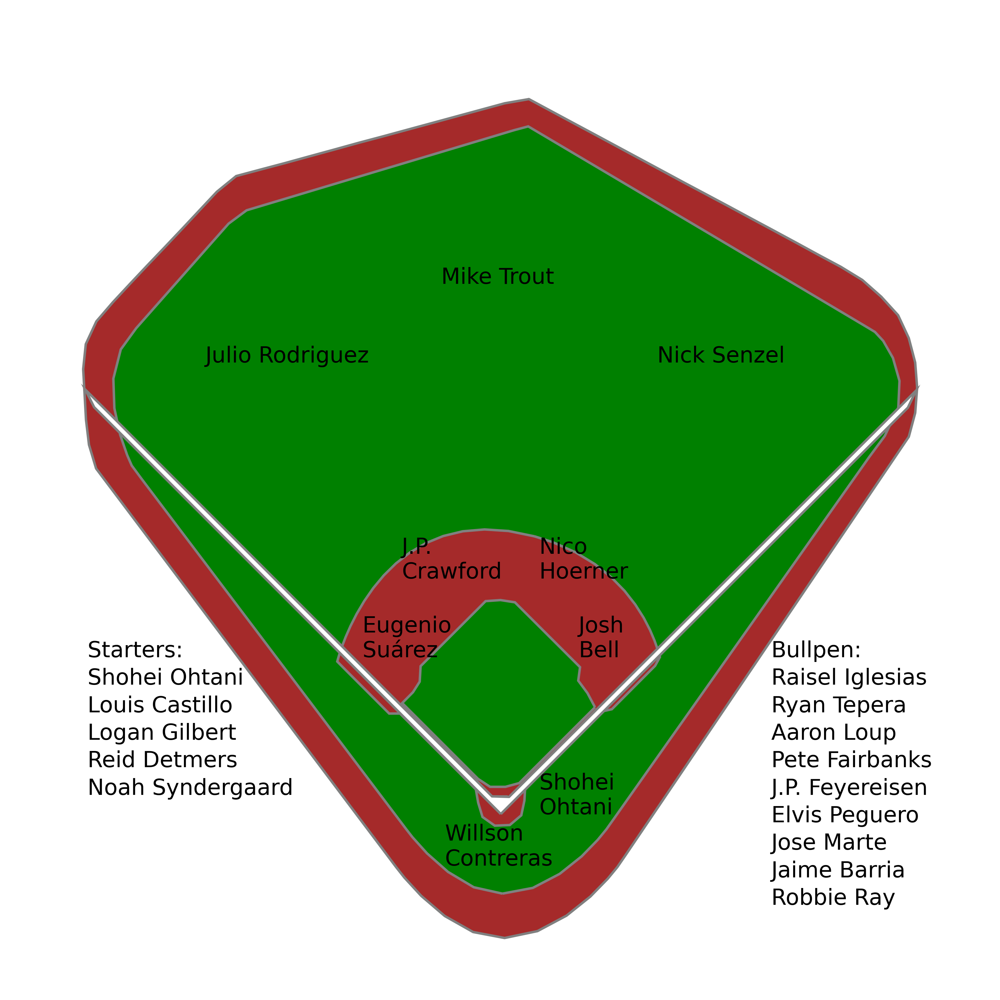
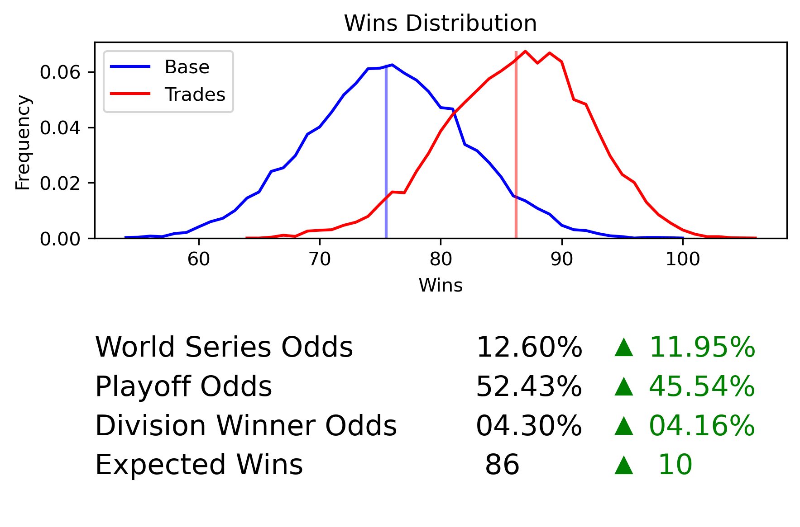
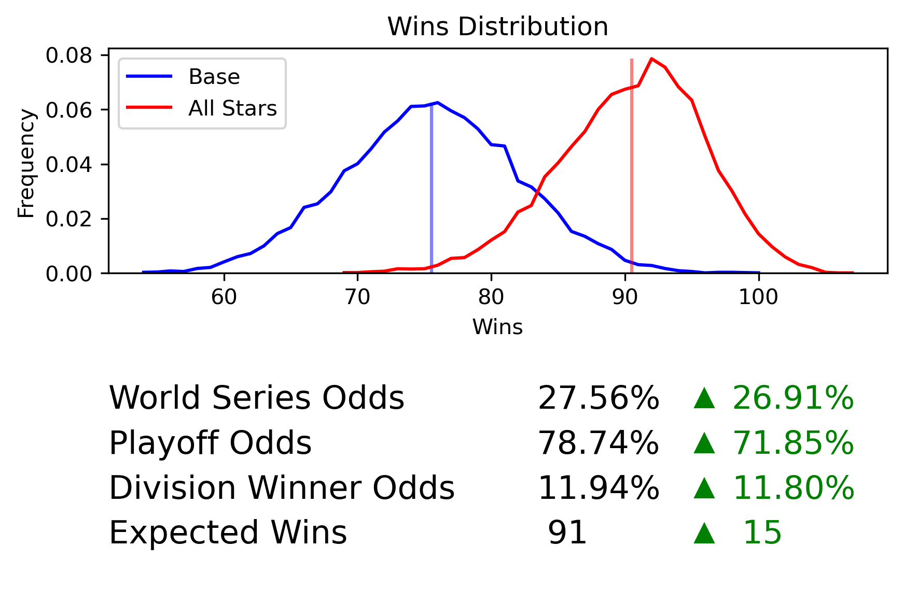
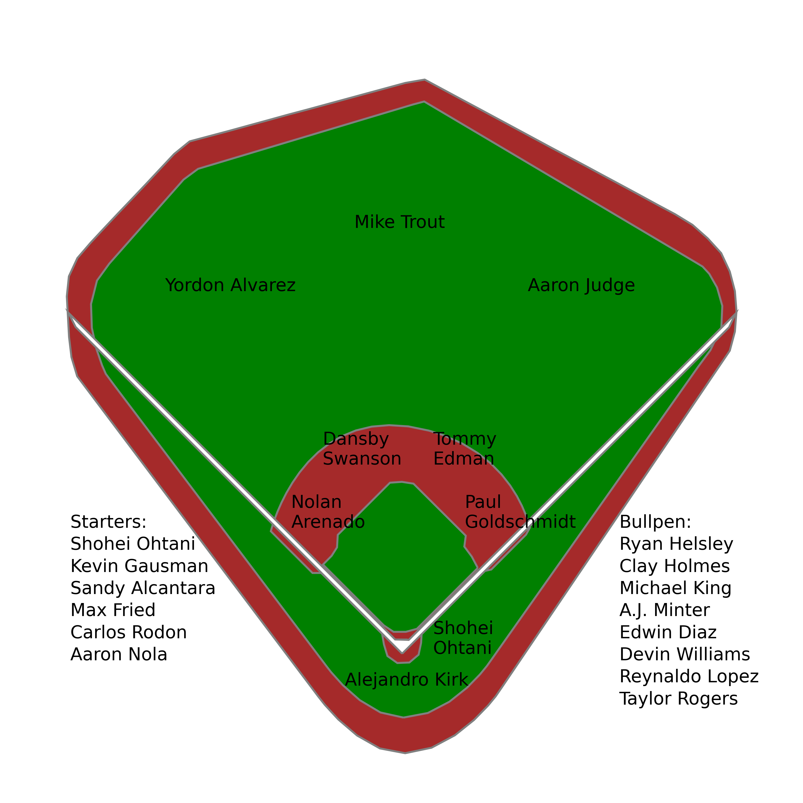
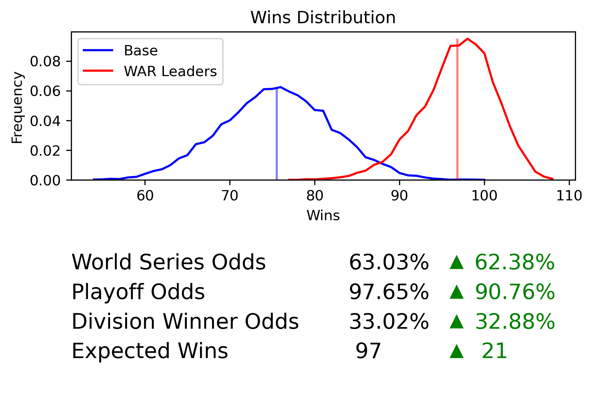

July 19, 2022
Can We Get the 2022 Angels to the Postseason?
To date, the best thing about the Angels' year has been their City Connect jerseys. Despite having two of the best players in baseball in Mike Trout and Shohei Ohtani, they are 10.5 games out of the Wild Card race, and 20.5 in the division. In an effort to see if their season was truly lost, I set out to find a series of trades that would give them at least a 50% chance of making the postseason according to Satchel, my MLB projections model.
I gave myself two constraints on the trades I could make. First, Ohtani and Trout could not be traded. Second, I could only make trades that were approved in the Baseball Trade Values Trade Simulator. All trade values mentioned in the rest of this article were taken from the trade simulator.
Trying to determine which teams consider themselves sellers at the deadline and which front offices are willing to give up major league talent for prospects is beyond the scope of this project, though I did initially attempt to trade primarily with teams out of the playoff races. However, I eventually reached a point where I needed to trade with teams that were ahead of the Angels in the Wild Card (Seattle and Tampa Bay) both to make the Angels better and to make the competition worse. As a result, some of the trades got a little ridiculous. Additionally, I had to rely a lot on adding cash to make deals happen. This was partially because the trade simulator has a cap on the number of players that can be included in a trade, and partially because I simply ran out of high value players in the Angels' system to trade. With that in mind, here are the six deals I made.
Trade 1: Washington Nationals
| Angels Get | Nationals Get |
|---|---|
| 1B Josh Bell | 2B Michael Stephanic |
| 3B Jonathan Villar | |
| 3B Werner Blakely (Low-A - #21 Prospect) |
The goal of this first trade was to upgrade the bat at first base. Bell brings a 148 wRC+ to the lineup, compared to Jared Walsh's 93. Additionally, Walsh has a fairly high trade value, so I assumed I would have to move him at some point to shore up other weaknesses in the roster, leaving space in the lineup for Bell.
I was able to successfully construct a trade for Juan Soto that involved the Angels taking on Stephen Strasburg's contract and sending over many of their top prospects. However, I needed those prospect to make other deals, so I decided against making it.
This trade added a couple of wins to the projected total, leaving plenty more work to be done.

Trade 2: Chicago Cubs
| Angels Get | Cubs Get |
|---|---|
| C Willson Contreras | C Max Stassi |
| 2B Nico Hoerner | RP Jose Quijada |
| SS Arol Vera (Low-A - #2 Prospect) | |
| SP Ky Bush (AA - #4 Prospect) | |
| SP Mason Erla (AA - #22 Prospect) | |
| $4 Million |
This is the first of many trades where I threw some money in to fill the gap in value. Contreras is an obvious upgrade at catcher and very likely to be available, while Hoerner fills the gap at second left by the Stephanic trade. I did have to give up a couple of highly ranked prospect to complete the deal, but given the singular goal of getting the Angels to the postseason this year, it was worth it.

Trade 3: Cincinnati Reds
| Angels Get | Reds Get |
|---|---|
| SP Louis Castillo | 1B Jarded Walsh |
| 2B Mike Moustakas | OF Jordyn Adams (AA - #6 prospect) |
| OF Nick Senzel | C Edgar Quero (Low A - #8 prospect) |
This trade was interesting, because it basically boiled down to being willing to eat Moustakas' massive contract and barely replacement level play in order to land Castillo and Senzel. Moustakas' -27.6 trade value offset most of Castillo's 41.2 value, making it possible to put together a solid prospect package for a needed starter.

Trade 4: Seattle Mariners
| Angels Get | Mariners Get |
|---|---|
| OF Julio Rodriguez | OF Brandon Marsh |
| SP Robbie Ray | SP Patrick Sandoval |
| SS Denzer Guzman (High-A - #5 prospect) | |
| SS Jeremiah Jackson (AA - #7 prospect) | |
| $10 Million |
As mentioned earlier, I quickly realized that given talent constraints both on the market and in the Angels' system, I needed to make some trades that would weaken teams ahead of the Angels, even if they were a bit ridiculous. This is one of those ridiculous trades. There is no real chance Seattle actually trades Julio Rodriguez. However, based on trade values, it is theoretically possible. I once again had to take on a player with highly negative trade value in Robbie Ray to make the trade happen. Add in the #5 and #7 prospects in the Angels' system according to MLB.com, and what amounts to a $10 million bribe to not win this year, and you have a deal.
Compared to the three previous trades, the marginal effect on playoff odds is huge because it significantly weakens the Mariners lineup.

Trade 5: Tampa Bay Rays
| Angels Get | Rays Get |
|---|---|
| RP Pete Fairbanks | RP Austin Warren |
| RP J.P. Feyereisen | RP Andrew Wantz |
| OF Kevin Kiermair | OF Jo Adell |
| OF Orlando Martinez (AA) | |
| $7 Million |
Trade number five served two purposes. First, it weakened a competitor. Second, it added some depth to a bullpen that, according to Baseball-Reference's Wins Above Average positional table, is the third worst in the majors. Trading Jo Adell also frees up room on the roster for the other outfielders I picked up. The $7 million in cash is another bribe for the Rays to throw in the towel on this season.

Trade 6: Seattle Mariners
| Angels Get | Mariners Get |
|---|---|
| SP Logan Gilbert | OF Taylor Ward |
| SS J.P. Crawford | SS Luis Rengifo |
| 2B Adam Frazier | SP José Suarez |
| 3B Eugenio Suárez | 1B David MacKinnon |
| INF Andrew Velazquez | |
| SP Janson Junk (AAA - #10 Prospect) | |
| $10 Million |
In the final trade, I steal from the Mariners again. This trade was interesting because Eugenio Suárez has a -13.6 trade value despite putting together a solid season so far. This offset some value coming from Crawford and Gilbert (40.6 and 54.5, respectively) while giving me a replacement for Villar at third and taking a bat away from a team ahead in the standings.
The marginal impact of this trade was huge. Turns out when you take three starters and a key piece of the rotation from one team and give it to a division rival, they don't perform well over the rest of the season.
Final Lineup
After all of that, here is the new starting lineup and rotation for the Angels:

With Frazier, Moustakas, and Kiermair on the bench.
I do not claim this is the only, or event the best, way to get the Angels to the postseason. But with this team, the Angels project to go 47-23 in the final 70 games of the year, increasing the probability they make the postseason to 52.43%.

| Team | Wins to Date | Losses to Date | Wins RoS | Losses RoS | Projected Wins | Projected Losses | Make Playoffs (%) |
|---|---|---|---|---|---|---|---|
| LAA | 39 | 53 | 47 | 23 | 86 | 76 | 52.43 |
Takeaways
What have we learned? It is technically not impossible for the Angels to make the postseason this year. All they need to do is trade nine of their top 25 prospects and send $31 million to other teams to make it happen. This would of course require a few GMs losing their mind and accepting trades that would alienate the fan base and almost certainly cost them their jobs. So, unfortunately for Angels fans, they will probably need to wait a bit longer to see October baseball.
Other Simulations
For fun, I also simulated what would happen if the Angels swapped their starting lineup with the AL All Stars, and what would happen if they swapped their entire roster for the current MLB WAR leaders in each position (again only keeping Trout and Ohtani in both cases). Unsurprisingly, they become World Series favorites in both scenarios and project to dominate the second half.
All Stars Simulation
| Angels | All Stars |
|---|---|
| Jared Walsh | Vladimir Guerrero (TOR) |
| Michael Stefanic | Andres Gimenez (CLE) |
| Jonathan Villar | Rafael Devers (BOS) |
| Luis Rengifo | Tim Anderson (CHW) |
| Brandon Marsh | Aaron Judge (NYY) |
| Taylor Ward | Giancarlo Stanton (NYY) |
| Max Stassi | Alejandro Kirk (TOR) |
With all the All Star position players, the Angels would have the starting lineup and pitching staff below.

A team full of All Stars wins. A lot. If this were to happen, the Angels would immediately become World Series favorites and be about as certain to make the postseason as possible.I haven't been able to find the highest second-half winning percentages in MLB history, but it seems like a safe bet that the .742 rate this team is projected for would be near the top of that list.

| Team | Wins to Date | Losses to Date | Wins RoS | Losses RoS | Projected Wins | Projected Losses | Make Playoffs (%) |
|---|---|---|---|---|---|---|---|
| LAA | 39 | 53 | 52 | 18 | 91 | 71 | 78.74 |
WAR Leaders Simulation
| Angels | WAR Leader |
|---|---|
| Jared Walsh | Paul Goldschmidt (STL) |
| Michael Stefanic | Tommy Edman (STL) |
| Jonathan Villar | Nolan Arenado (STL) |
| Luis Rengifo | Dansby Swanson (ATL) |
| Brandon Marsh | Yordan Alvarez (HOU) |
| Taylor Ward | Aaron Judge (NYY) |
| Max Stassi | Alejandro Kirk (TOR) |
| Reid Detmers | Sandy Alcantara (MIA) |
| Patrick Sandoval | Carlos Rodon (SFG) |
| Jose Suarez | Kevin Gausman (TOR) |
| Noah Syndergaard | Aaron Nola (PHI) |
| Raisel Iglesias | Ryan Helsley (STL) |
| Ryan Tepera | Edwin Diaz (NYM) |
| Aaron Loup | Michael King (NYY) |
| Jose Quijada | Devin Williams (MIL) |
| Austin Warren | A.j. Minter (ATL) |
| Andrew Wantz | Clay Holmes (NYY) |
| Jose Marte | Reynaldo Lopez (CHW) |
| Jaime Barria | Taylor Rogers (SDP) |
| Elvis Peguero | Anthony Bass (MIA) |
Giving the Angels all the MLB WAR leaders at every position (including the pitching staff) makes them a juggernaut.

Not only would this make them a lock to get into the postseason, but it would actually make them a 97 win team thanks to a 58-12 second half. That winning percentage over a full season would be the highest ever, amounting to 134 wins.

| Team | Wins to Date | Losses to Date | Wins RoS | Losses RoS | Projected Wins | Projected Losses | Make Playoffs (%) |
|---|---|---|---|---|---|---|---|
| LAA | 39 | 53 | 58 | 12 | 97 | 65 | 97.65 |
Last Updated: July 20, 2022
Tweet